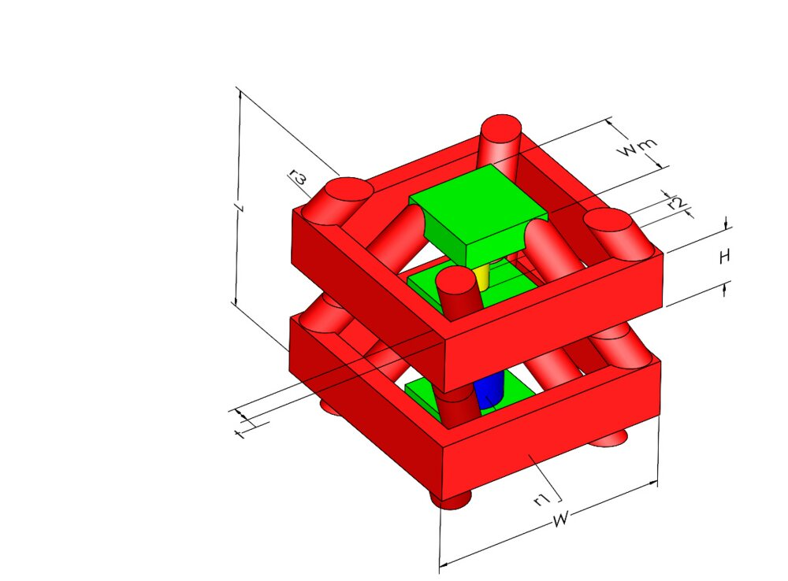
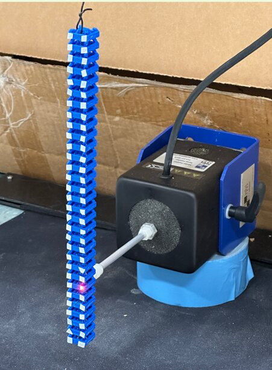
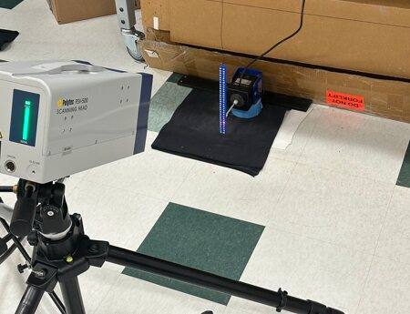
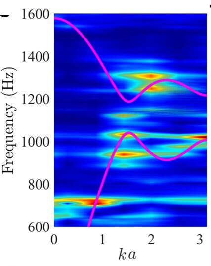
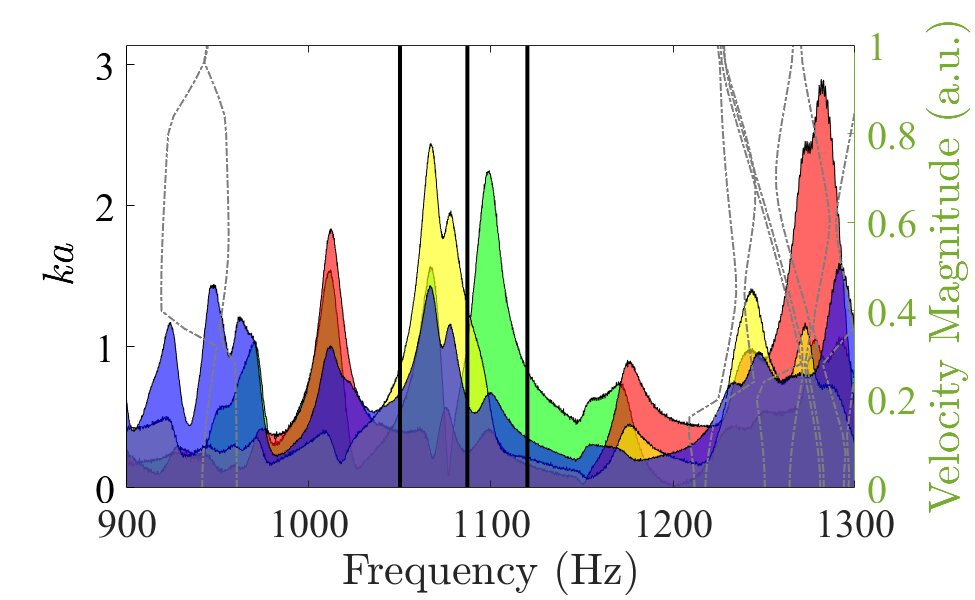

With a band gap: topology, and where it breaks
Topology predicts localized states straight from the bulk band structure. In a Su–Schrieffer–Heeger (SSH) lattice, the winding number counts the protected states at a domain wall, but that rule assumes nearest-neighbor springs. We showed in theory and in experiment that strong long-range springs create more domain-wall states than the winding number allows. The Berry connection and Jackiw–Rebbi theory count them correctly and tie each state to a Dirac cone in the bulk bands.
A follow-up study tracked which in-gap edge and domain-wall states survive when the lattice’s chiral symmetry is strongly perturbed, which sets expectations for real, continuum phononic crystals.
a

b

c

d

e

f